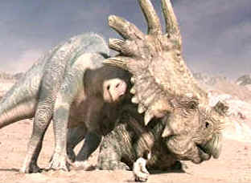

| Dinosaur (SE)/A,A |
| Disney/2000/82/ANA 1.85 |
I absolutely loved Dinosaur. The visuals are often breathtaking,
but it is the story-telling that truly makes Dinosaur roam the screens with power and
passion. From the very beginning tour-de-force opening that rocked my cynical foundations, the
filmmakers brought visual story-telling back to the days when there was no dialogue to bail you
out. When the characters finally do utter their first English words, it's almost a shock and it
changes the course of Dinosaur. The first detour delivers a frolicking Disney jungle world
but it's not long before another detour sends Dinosaur down another, very exciting road.
Dinosaur becomes an epic tale of survival under more dire circumstances. It is told with blazing
efficiency, moving through its sections with all the speed of charging bull dinosaur.
As a caveat, I think there is lots of material that is far too intense for the
younger viewers. i watched with my twelve year old daughter, and that was fine, but those under
ten, even though they may have been steeled by far too much action movie violence, there is a
ferocious nature to Dinosaur that makes it exciting for adults.
 |
| Aladar helps out a friend. ©Disney |
The dramatic ingredients of Dinosaur are trumps all the
way. A budding dinosaur romance is kept within the story bounds and expanded on to add dramatic
story impact. There is a fair share of integral humor, but it exists out of the nature
of the characters, remarkable for an animation that could easily have gone Dino cute. The cast of
characters includes, Aladar, the Iguanodon who destiny rocked in its cradle. The motherly and
sanguine lemur Plio, who can really flash those yellow eyes. Yar and Zini are added lemur bonuses.
I got a big kick out of Baylene the older, tired Brachiosaurus and Eema the Styracosaurus. The
march to the promised land is thrilling and totally compelling. The character conflicts develop
organically with short, quick, incisive strokes.
The character voicing team do a fine job. D. B. Sweeney lends innocence and
determination to Aladar. Alfre Woodard delivers Plio's lines with beautiful timbre. Joan
Playwright's British accent is a good choice for Baylene and Della Reese brings charming
individuality to Eema.
The production team does a splendid job. The animation is superb, combining very
real aspects of the dinosaurs with cartoon charm. Directors Eric Leighton and Ralph Zondag bring
breathtaking spatial perspectives tot he visuals. There were times that I felt I was on a motion
simulation thrill ride. James Newton Howard's score moves the action along with pulse-pounding
excitement. Huzzahs to the Dinosaur team!
Dinosaur is an amazing DVD. Created directly from the digital
source material, the transfer is meticulously crafted for instant installation in the video
Pantheon. There are no harsh edges to the wonderful images. The temptation to push and pump the
image, to milk the Dinosaur if you will, is resisted to grand effect. The world of Dinosaur,
a seamless blend of CGI and real world shots comes to brilliant film life on this DVD. The
light output is outstanding in all circumstances, the image is as sharp as intended in every scene.
Gray scale adheres to a consistent palette, creating it's own look for Dinosaur. The DTS
sound track delivers on a par with the stunning visuals. Deep, accurate bass thwumps measure the
footsteps of the larger dinosaurs without distortion The ferocity of the more violent
creatures sent shivers down my spine. The THX certified DVD also provides Dolby Digital 5:1 tracks.
Disney delivers a dinosaur-sized special edition in Dinosaur. The 2-disc
set is virtually encyclopedic in detailing the evolution of Dinosaur. Production development,
character design, creating the prehistoric world, abandoned sequences, music and sound design and
much more are given first class treatment. In addition to the featurettes, two audio commentaries
run the length of the film, one from the director and effects team, and the other from the producer
and the production team.
|
Home Theater Talk
Cartoons |


Selections from the Feature Archive
include articles on Akira Kurosawa, Frank
Darabont, Blonde Bimbos, Hollywood Street Gangs, or Vietnam: The
Hollywood Pariah, and many more....

Is North by Northwest Hollywood's definitive exploration of the nose? From schnozzles to
beezeers, film mavens make the most of the foremost. Click on Mount Hitchcock for more.

The Movie Poster Archive includes extensive poster images from the films of stars like Susan Hayward, Kirk Douglas, Katharine Hepburn and many more. Our featured star is Lana Turner.

Annie Get Your Gun/A,A-
Irving Berlin's brilliant musical gem is polished and preserved on this Warner DVD release. An
explosion of music, song, dance and color.

 Have you visited Home
Theater Talk lately? One of the friendliest places on the Net for Home Theater and DVD
discussion, you can get help for installation problems or simply share your opinions with other
Vidiots.
Have you visited Home
Theater Talk lately? One of the friendliest places on the Net for Home Theater and DVD
discussion, you can get help for installation problems or simply share your opinions with other
Vidiots.

Great site for DVD followers. Lots of
information, some speculation, opinion, and reviews all bundled in a sparkling interface.

The National Film Preservation Foundation (NFPF) is the nonprofit organization created by the U.S. Congress to save
America's film heritage.

DVD News, Reviews, Previews, Easter Eggs and more.